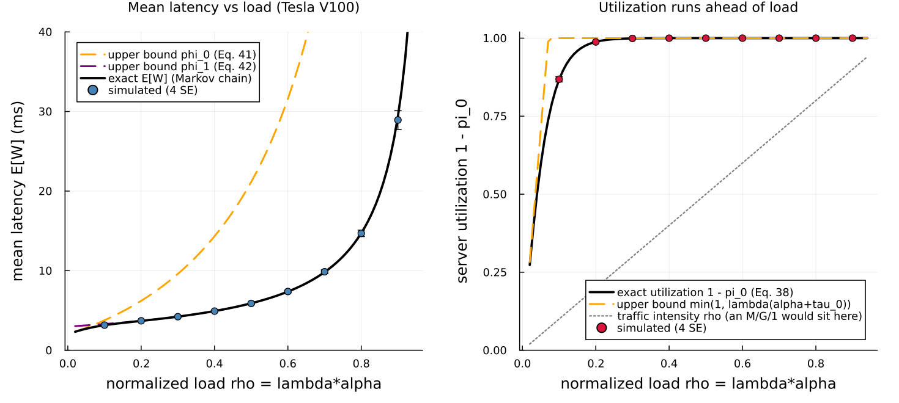
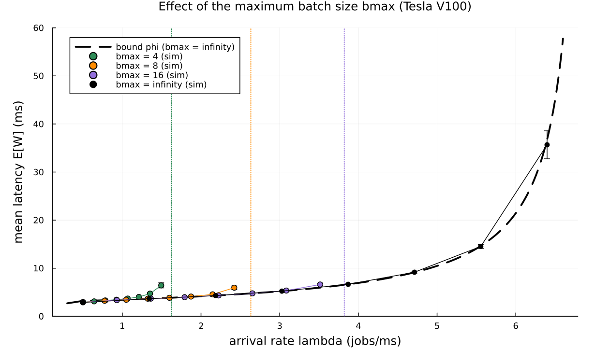

A batch-service model of a GPU inference server with dynamic batching
This page walks through examples/inoue2021_dynamic_batching.jl: a single-GPU inference server that gathers waiting requests into batches, modeled with Concourse's Batching capability, checked against two exact closed-form oracles, and used to reproduce the mean-latency figures of Inoue, "Queueing analysis of GPU-based inference servers with dynamic batching" (Performance Evaluation 2021, arXiv:1912.06322, arxiv.org/abs/1912.06322).
GPU = graphics processing unit. FCFS = first come, first served. SE = standard error.
The paper's Section 3.2 result on energy efficiency (that efficiency rises monotonically with load) is out of scope here; this example reproduces the latency analysis of Sections 2 and 3.3 and the finite-batch experiment of Section 4.
What the server does
A GPU answers an inference request — classify this image, transcribe this clip — by running a fixed neural network over the input. The important fact is that a GPU is a wide parallel processor: it can run the same network over many inputs at once for almost the same wall-clock cost as running it over one input. The fixed cost of launching the computation — moving the network's weights on-chip and starting thousands of parallel threads — is paid once, whether the batch holds one request or a hundred.
The paper's Table 1 measures this directly on a Tesla V100. A batch of 1 image is processed at 476 images/second; a batch of 128 at 6275 images/second. So a batch of 128 takes only about 13 times the wall-clock time of a single image, not 128 times. This is why GPUs batch: waiting a moment to gather the requests that have piled up, and processing them together, is far more efficient than serving them one at a time.
Formally the batch processing time is affine in the batch size (the paper's Assumption 4):
tau(b) = alpha * b + tau_0 (milliseconds),where tau_0 is the fixed per-batch launch overhead and alpha the marginal cost of one extra request in the batch. It is deterministic because a neural network applies the same fixed sequence of operations to a fixed-shape input regardless of the data — so the time depends only on the batch size b, not on which images are in the batch.
The dynamic batching rule
The scheduling policy the paper analyzes is deliberately simple: whenever the server becomes idle and at least one request is waiting, it gathers all waiting requests into a single batch and starts processing immediately. There is no fixed batch size and no timer — the batch is exactly whatever accumulated while the previous batch was being processed.
This creates a natural feedback. Under heavy load a large batch is running, more requests pile up behind it, and the next batch is large (and processed efficiently). Under light load batches are small, often size 1. A size-1 batch is the least efficient mode — full overhead tau_0 for a single request — so the system dislikes being lightly loaded, a point that returns below.
Why this is a batch-service queue in Concourse
This gather-everything-on-idle rule is exactly Batching(min = 1, max = typemax(Int)), the default in Concourse: while a server slot is free and at least one job waits, take the entire line into one batch. When a batch forms, Concourse mints one synthetic job carrying a single mark, batchsize = b, and the batch's service clock reads that mark. So the affine processing law is one line — no new expression atom — and on completion the b members route out individually. The mechanics are documented in Batch service.
The Concourse model
One Poisson source (the "arrivals"), one FCFS station whose deterministic service law reads the batch-size mark, and gather-everything batching:
function inoue_model(; α = ALPHA, τ0 = TAU0, bmax = typemax(Int))
net = QueueNetwork(param_names = (:lambda,))
source!(net, :arrive;
interarrival = Law(:Exponential, scale = inv(Param(:lambda))))
station!(net, :gpu;
service = Law(:Dirac, value = Const(τ0) + Const(α) * Mark(:batchsize)),
batching = Batching(min = 1, max = bmax))
sink!(net, :done)
route!(net, :arrive, Always(:gpu))
route!(net, :gpu, Always(:done))
compile(net)
endbmax = typemax(Int) is the paper's infinite-maximum-batch-size model; a finite bmax caps the sweep at bmax jobs, the finite variant of Section 4.
The published service line
The constants are
alpha = 0.1438 ms/job, tau_0 = 1.8874 ms.These are published, not calibrated by us. They are the paper's own least-squares fit to the Tesla V100 (mixed precision) row of Table 1, reported in Section 3.3 just after Assumption 4, with coefficient of determination R² ≈ 0.9998. All times are in milliseconds, exactly as the paper plots them. The arrival rate lambda is in jobs/ms; the normalized load is rho = lambda * alpha, and the stability condition is rho < 1 (the paper's Eq. 27). The paper also reports a Tesla P4 (INT8) fit alpha = 0.5833, tau_0 = 1.4284; we use only the V100 fit.
Two exact oracles
For this model the mean latency is exact in closed form two different ways, and the example computes both — one to validate the simulator, one to reproduce the paper's headline bound.
The exact latency. The sequence of processed batch sizes B_1, B_2, … is a Markov chain: the next batch is exactly the number of arrivals during the current batch's processing time, B_{n+1} = A_n + 1{A_n = 0}, where A_n | B_n = b is Poisson with mean lambda * (alpha*b + tau_0) (the paper's Eqs. 3–5). We truncate that chain, solve for its stationary distribution by linear algebra, read off E[B] and E[B²], and apply the paper's Eq. 36:
function exact_latency(λ, α, τ0; B = 600)
EB, EB2 = batch_moments(λ, α, τ0; B)
α + τ0 + (1 + 2 * λ * α) * (EB2 - EB) / (2 * λ * EB)
endThis oracle touches nothing in the simulator — only Poisson probabilities and a linear solve.
The closed-form bound. The paper's main result, Theorem 2, is a pair of upper bounds on the mean latency that need no chain solve at all:
φ0(λ, α, τ0) = (α + τ0) / (2 * (1 - λ * α)) * (1 + 2 * λ * τ0 + (1 - λ * τ0) / (1 + λ * α))
φ1(λ, α, τ0) = 1.5 * τ0 / (1 - λ * α) + (α / 2) * (λ * α + 2) / (1 - λ^2 * α^2)
φ(λ, α, τ0) = min(φ0(λ, α, τ0), φ1(λ, α, τ0))phi_0 (Eq. 41) is obtained by pretending the mean batch size is its trivial lower bound E[B] = 1, and is tight only at low load. phi_1 (Eq. 42) is obtained by pretending the idle probability pi_0 = 0, and is tight from moderate load upward. Their minimum phi is the paper's simple, remarkably accurate approximation to the exact E[W].
Validation: the simulation against the exact oracle
The simulated mean latency is measured by Little's law — E[W] = E[L] / lambda, the paper's own Lemma 2 identity — where E[L] is the time-average number of requests in the system (which counts batch members, not the synthetic batch job). Sixteen replications of 6000 simulated milliseconds each. At every load the simulated mean latency agrees with the exact Markov-chain oracle within the repository's four-standard-error convention, and lies under the bound:
Tesla V100 fit: alpha = 0.1438 ms, tau_0 = 1.8874 ms, infinite bmax
rho lambda simulated W (ms) exact W (ms) bound phi |z|
0.3 2.086 4.212 ± 0.016 4.225 4.226 0.79
0.5 3.477 5.897 ± 0.022 5.902 5.902 0.21
0.7 4.868 9.759 ± 0.039 9.818 9.818 1.53
0.8 5.563 14.663 ± 0.123 14.715 14.715 0.42
0.9 6.259 29.281 ± 0.443 29.408 29.408 0.29All five points pass at 4 SE (largest |z| = 1.53). Notice that the exact E[W] and the closed-form bound phi are identical to three digits from rho = 0.5 up: this is the paper's central empirical claim — the simple bound phi_1 is not just an upper bound but an excellent approximation over most of the load range.
Experiment 1: mean latency and the utilization surprise

The left panel reproduces the paper's Figure 4: mean latency E[W] against the normalized load rho, with simulated points (4-SE bars) on the exact curve. The two dashed upper bounds are drawn too. phi_0 (orange) hugs the exact curve only near rho = 0 and then shoots up; phi_1 (purple) is so tight that it disappears underneath the exact black curve for essentially the whole range — which is precisely the paper's point about the accuracy of Theorem 2.
The right panel reproduces the paper's Figure 5 and is the more surprising result. In an ordinary M/G/1 queue the server utilization equals the traffic intensity rho (the dotted diagonal). Here it does not: the utilization 1 - pi_0 (fraction of time the server is busy) climbs close to 1 by rho ≈ 0.2, far above the load. The reason is the feedback described earlier: whenever the server falls briefly idle, the next arrival starts a size-1 batch — the slowest, least efficient mode — so the system spends almost no time idle even under a moderate load. This is exactly why the pi_0 = 0 bound phi_1 is so accurate: pi_0 really is nearly zero.
Experiment 2: the maximum batch size

This reproduces the paper's Figure 8. The infinite-batch-size bound phi (dashed black) is the reference. For a finite maximum batch size bmax the server can gather at most bmax jobs at once, so its throughput saturates at mu[bmax] = bmax / (alpha*bmax + tau_0) and the system is only stable for lambda < mu[bmax] (dotted vertical lines).
The message is the paper's: while the system is moderately loaded, the simulated finite-bmax latency tracks the infinite-bmax bound closely — a modest cap costs almost nothing. But as lambda approaches the bmax-specific stability boundary, the finite-bmax curve peels away and diverges, because a capped server cannot form the large, efficient batches that an unbounded server would. A larger bmax pushes that divergence to a higher arrival rate. So bmax is a capacity knob: it must be large enough that the operating load sits well below mu[bmax], and once it is, the simple infinite-bmax formula describes the system well.
Gradients
The example closes with a differentiation showcase: the derivative of E[∫ L dt] (expected time-integrated occupancy) with respect to the arrival rate lambda, over a 3000-ms horizon at rho = 0.5.
lambda enters only the Exponential arrival clock, which is a derivative-carrying family, so it has a score channel. The score (likelihood-ratio) estimator picks it up and agrees with a paired-seed finite-difference baseline:
d E[integral L dt]/d lambda over H=3000 ms, rho=0.5:
score = 35819.0 ± 3261.0
finite-diff = 35381.5 ± 98.8
|Δ|/SE = 0.13The two routes agree well within 4 SE (|Δ|/SE = 0.13). The score estimate is noisier — a likelihood-ratio estimator always carries more variance than a pathwise one — but it is unbiased and correct.
What is not available here is pathwise IPA, and batching is exactly why. Infinitesimal perturbation analysis assumes the sample path deforms smoothly as lambda changes. But the batch size is integer-valued: a perturbation that slides one arrival across the instant a batch forms changes the batch composition by a whole job — a discontinuous jump that the IPA interchange argument does not cover. This is the documented boundary for batch models (see Batch service, "Estimators"): score is valid because the batch clock's law reads only the frozen batchsize mark, so the recorded likelihood is exactly right; pathwise IPA is not. The showcase therefore validates score against finite differences, and there is no IPA curve to show for a batch model.
What this demonstrates about Concourse
- The paper's entire dynamic-batching policy is a single keyword:
Batching(min = 1, max = typemax(Int)). A batch-size-dependent, deterministic service law is one line,Law(:Dirac, value = Const(τ0) + Const(α) * Mark(:batchsize)), reading the synthetic batch job'sbatchsizemark. - The finite-
bmaxvariant is the same model with one argument changed, and it reproduces the paper's capacity-boundary behavior with no new code. - Two independent closed-form oracles — the exact batch-size Markov chain and Theorem 2's bound — validate the simulator at 4 SE across the load sweep, and the mean latency is measured by Little's law folded over the replayed record, not by counters bolted into the simulator.
- The gradient showcase marks the boundary of the differentiation machinery: score works where a parameter rides a derivative-carrying clock; pathwise IPA does not survive the integer discontinuity of batch formation.
Running it
julia --project=examples examples/inoue2021_dynamic_batching.jlRuntime is a few minutes (cold start included); the figures land in docs/figures/ and docs/src/manual/figures/. The docs build does not run the simulation — the committed PNGs are the artifacts this page embeds.